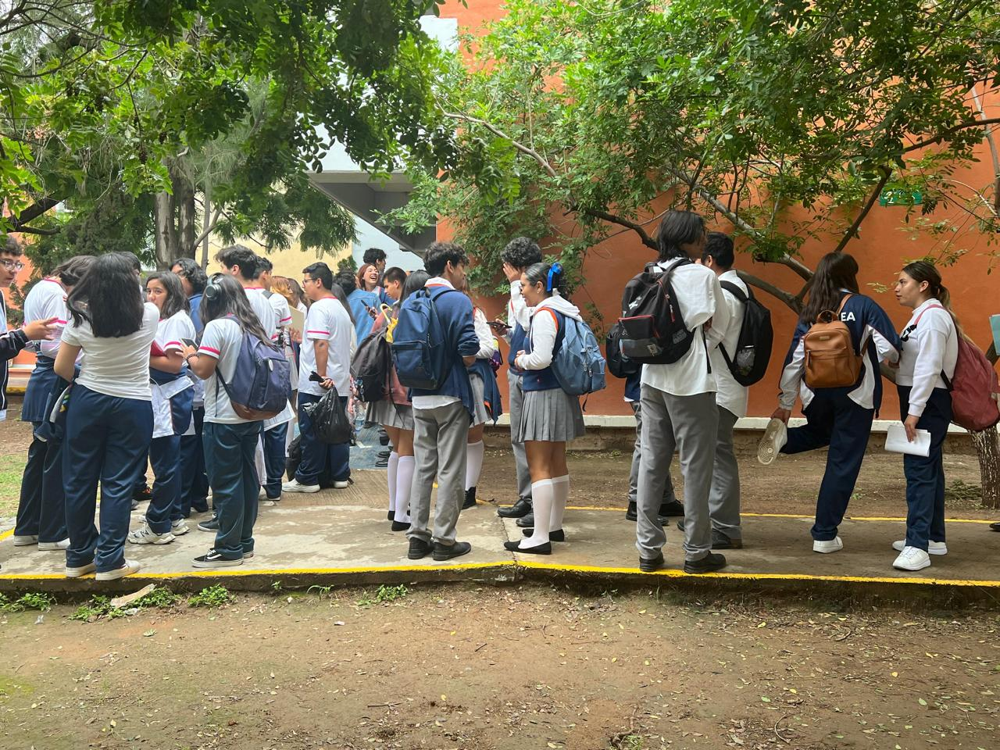
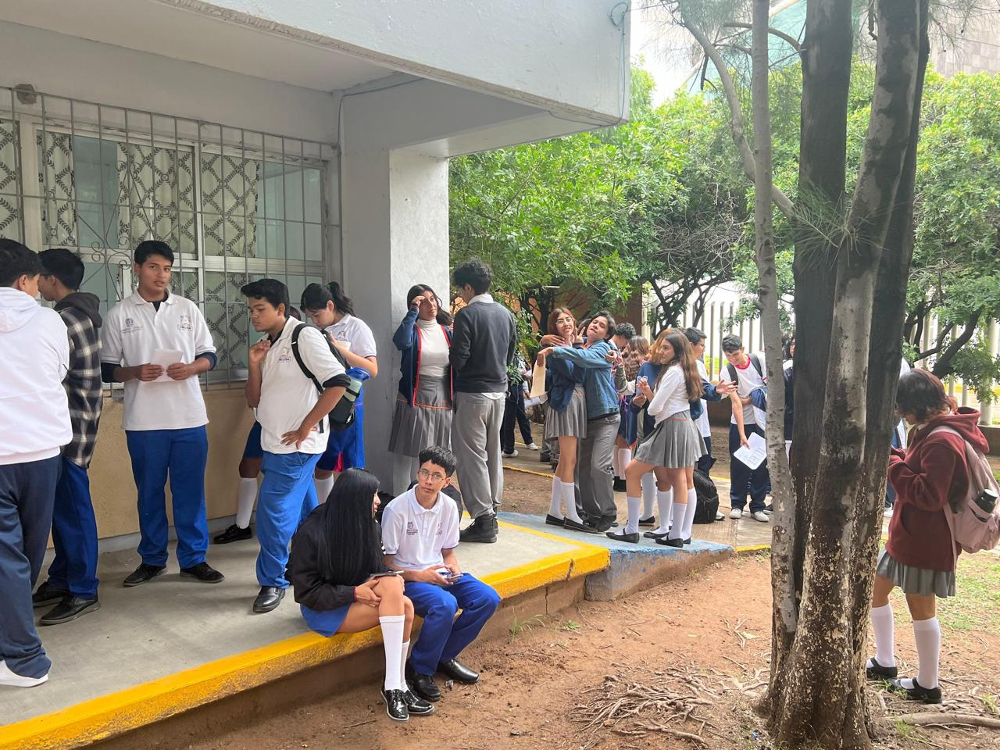
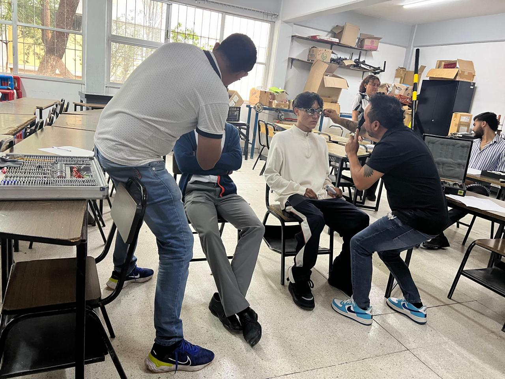

¡Hola! ¿Te has preguntado alguna vez cómo funcionan las gafas para ver? ¿Por qué hay tantos tipos diferentes? En este artículo, te guiaremos a través del fascinante mundo de las lentes de vista y te ayudaremos a comprender cómo pueden mejorar tu visión.
Pasos del procesos
- formulario: Se mando un formulario para determinar quien ocupapa lentes y quien no.
- contacto con el DIF: Corrigen el astigmatismo, una condición que causa visión borrosa en todas las distancias.
- Examen de la vista: se hara un examen de vista para determinar que tipo de graduacion tiene cada alumno
- Resultado del examen:en esta etapa se determinran los resultados de la graduacion qu el/la alumna necesita
- Estado socio economico: en esta etpa se realizaran una cerie de preguntas para determinar si el/la alomna necesita ayuda para pagar sus lentes
- Dictamen: aqui ya se determina si realmente el/la alumna necesuta que le ayuden con el 100% de el costo de los lentes (aunque este porcentaje puede variar).
- Mandar haser los lentes: aqui ya se mandaran a hacer los lentes a la medida de los alumnos .
- Seremonia de entrega:se hara una ceremonia en la que se le entregaran los lentes a los alumnos .
FORMULARIOS
en este paso se mando un folmulario los alumnos para que estos lo contestearan y asi ver si realmnet estan interesados en hacerse un examen de la vista
CONTACTO CON EL DIF
en este paso se contacto cn el DIF para financiar el examen de la vista para las y llos jovenes de la preparatiria
examen de la vista
aqui para que los alumnos se pudieran hacer el examen de la vista se les pudio siertos documentos, como: copia de la ine de uno de tu padre, madre o tutor,
RESULTADOS DEL EXAMEN DE LA VISTA
dictamen
dictamen
dictamen
Conclusión:
Ir a la paginaLas lentes de vista son una herramienta esencial para mejorar la calidad de vida de millones de personas en todo el mundo. Al comprender los diferentes tipos de lentes y cómo elegir las adecuadas, puedes disfrutar de una visión clara y nítida en todas las distancias. Recuerda consultar a un oftalmólogo para obtener la mejor atención y orientación personalizada.
Ir a la pagina   